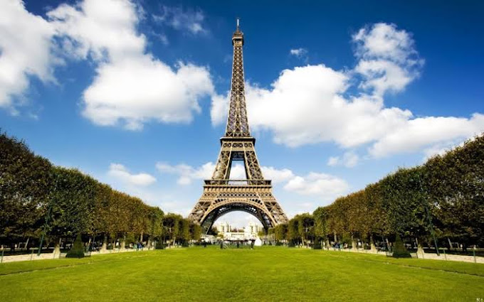

Pontos turisticos da europa
- Torre Eiffel
- Atenas
- Coliseu de Roma
- Torre Big Ben
- Sagrada Família
- Catedral de Notre Dame
- Museumplein
- Torre de Belém

Torre Eiffel
Torre Eiffel: o principal ponto turístico de Paris Quando pensamos em viajar à capital francesa, logo pensamos em visitar o maior símbolo do país: a Torre Eiffel. O monumento foi idealizado e construído pelo engenheiro Gustavo Eiffel e sua equipe durante um concurso em 1887. A Torre, da qual herdou seu nome, foi inaugurada em 31 de março de 1889, nas comemorações do 1º centenário da Revolução Francesa.